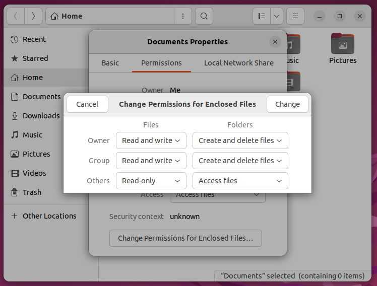
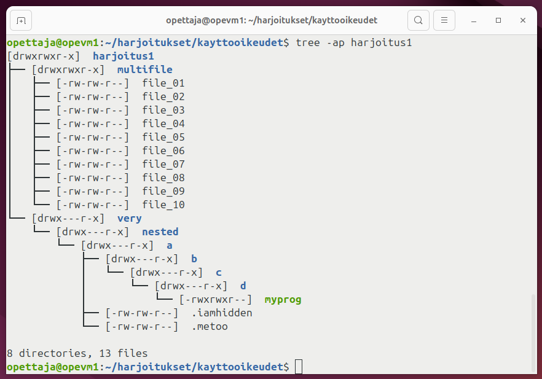

Käyttöoikeudet
Linuxissa tiedostoilla ja hakemistoilla on kullakin omat käyttöoikeudet. Kaikilla Linuxin tiedostoilla on kolmeosainen access control, joka määrää pääsyn kolmella dimensiolla: omistaja (esim. käyttäjä opettaja), ryhmä (esim. sales tai useammin sama kuin käyttäjä eli opettaja), sekä kaikki loput järjestelmään kirjautuneet käyttäjät eli others.
Jokaiselle näistä kolmesta, eli (owner)(group)(others), määräytyy pääsynhallinta kolmen bitin avulla. Näiden tarkat verbit riippuvat siitä, onko kyseessä tiedosto vai hakemisto. Mikäli kyseessä on tiedosto, niin verbit ovat vasemmalta lukien järjestyksessä read, write ja execute. Esimerkiksi ownerin pääsy voi olla jotain välillä 000...111. Kurkataan välissä, miltä tämä näyttää GNOME:n tiedostoselaimessa eli Nautiluksessa (ks. Kuvio 1).

Kuvio 1: GNOME 3:n vakio tiedostoselaimessa (GNOME Nautilus 42.6) voi asettaa hakemiston ja sen sisältämien tiedostojen sekä hakemistojen käyttöoikeudet rekursiivisesti.
Samat numeroina
Käännetään kuvassa näkyvä tiedostojen pääsyhallinta luvuiksi. Katso alla oleva taulukko.
| Selite | Binääri | Desimaali | |
|---|---|---|---|
| Owner can... | Read and write | 110 | 6 |
| Group can... | Read and write | 110 | 6 |
| Others can... | Read | 100 | 4 |
Huomaa, että selitteen verbit vaihtuvat sen mukaan, onko kyseessä tiedosto vai hakemisto. Verbit ovat selitettynä alla taulukossa. Linuxissa ohjelmat tunnistetaan siitä, että jokin kolmesta permissionista on muotoa xx1, kun taas Windowsissa suoritettavat ohjelmat tunnistetaan yleisesti tiedostopäätteestä (.exe).
| Tiedosto kohdalla entiteetti... | Hakemiston kohdalla.... | |
|---|---|---|
| 100 | Saa lukea sisällön | Saa listata mitä tiedostoja ja alihakemistoja se sisältää. |
| 010 | Saa kirjoittaa tiedostoon tai poistaa tiedoston. | Saa lisätä ja poistaa tiedostoja sekä alihakemistoja. |
| 001 | Saa suorittaa tiedoston. Tiedosto on nyt executable eli ohjelma. |
Saa suorittaa ohjelmia hakemiston sisällä, listata tiedostojen metadataa, vaihtaa pwd:n kyseiseksi kansioksi. |
Käymme Linuxin komennot myöhemmin läpi, mutta voit alustavasti jo miettiä, mitä alla näkyvät komennot tekevät. Komentojen välissä oleva && on looginen AND-operaattori, mikä aiheuttaa sen, että jälkimmäinen komento ajetaan vain jos ensimmäinen ei nostanut varoituksia. Muutoin komennot tekevät hyvinkin sen, miltä ne englanniksi kuulostavat.
$ echo "This is my file" > myfile # Merkkijono ammutaan uuteen tiedostoon
$ ls -la myfile
-rw-rw-r-- 1 opettaja opettaja 16 elo 30 13:09 myfile
$ cat myfile # Tulostetaan tiedoston sisältö
This is my file
$ chmod 777 myfile && ls -la myfile
-rwxrwxrwx 1 opettaja opettaja 16 elo 30 13:09 myfile
$ chmod -x myfile && ls -la myfile
-rw-rw-rw- 1 opettaja opettaja 16 elo 30 13:09 myfile
$ chmod +r myfile && ls -la myfile
-rw-rw-rw- 1 opettaja opettaja 16 elo 30 13:09 myfile
$ chmod 000 myfile && ls -la myfile
---------- 1 opettaja opettaja 16 elo 30 13:09 myfile
$ cat myfile # Tulostetaan tiedoston sisältö
cat: myfile: Permission denied
$ chmod u+rw && ls -la myfile
-rw------- 1 opettaja opettaja 16 elo 30 13:09 myfile
$ chmod g+r,o+r myfile && ls -la myfile
-rw-r--r-- 1 opettaja opettaja 16 elo 30 13:09 myfile
Entäpä hakemistot?
Hakemiston erottaa tiedostosta Linuxissa siten, että ls -la komennon output alkaa d-kirjaimella, kuten drwx------. Hakemistolle annettu hassu oikeus saattaa myöhemmin aiheuttaa päänvaivaa, kun pohdit mikset saa muokata jotain aiemmin luotua tiedostoa.
$ mkdir my # Luo kansio
$ touch my/tralalaa my/dingdingdong # ja sinne kaksi tiedostoa
$ mkdir my/inner # Luo myös alikansio
$ touch my/inner/peace # ja sinnekin tiedosto
$ tree my # Näytä hakemistopuu
my
├── dingdingdong
├── inner
│ └── peace
└── tralalaa
$ chmod 666 my # Anna muut paitsi execute kaikille
$ touch my/dingdingdong
touch: cannot touch 'my/dingdingdong': Permission denied
$ cat my/inner/peace
cat: my/inner/piece: Permission denied
$ ls -la | grep my # Kansion itsensä voi listata, sisältöä ei.
drw-rw-rw- 2 opettaja opettaja 4096 elo 30 15:51 my
$ rm -rf my/ # Yritä poistaa
rm: cannot remove 'my/dingdingdong': Permission denied
rm: cannot remove 'my/tralalaa': Permission denied
$ chmod u+x my # Anna execute ownerille
$ rm -rf my # Nyt kansion ja tiedostot voi poistaa
Tehtävät
Tehtävä: Käyttöoikeudet

Kuvio 1. Tavoiteltu lopputulos näkyy kuvassa.
Kuvassa näkyy näkyy tree -ap tehtava1 komennon output. Komento on ajettu hakemistossa ~/harjoitukset/kayttooikeudet. Luo vastaava hakemisto tehtävää varten, mutta noudattaen sinun omaa hakemistostandardia, jonka olet päättänyt aiemmin tällä kurssilla.
Tarkista komennolla tree -ap <hakemistonnimitähän>, että hakemistorakenne on samankaltainen. Vertaile erityisesti tiedostojen ja hakemistojen käyttöoikeuksia (eli merkkijonoa kuten -rw-rw-r-- tai drwx---r-x).
Jos haluat lisähaastetta, pyri tekemään tämä mahdollisimman pienellä määrällä komentoja. Kuinka esimerkiksi luot tiedostot file_01 - file_10 yhdellä komennolla? Avaimet vastaukseen löytyy Komennot -sivulta.
Tehtävä: Tarkista käyttöoikeudet skriptillä
Lataa tiedosto yhtä hakemistoa ylemmäs hakemistopolussa kuin mihin loit äskeiset tiedostot. Polku skriptiin on: https://raw.githubusercontent.com/sourander/linux-perusteet/refs/heads/main/kurssitiedostot/tarkista_kayttooikeudet.sh
- Lataa skripti
- Tee siitä ajettava
- Suorita se
- Tarkastele tulosta. Pitäisi olla 21/21 oikein.
Käytä lataukseen joko wget tai curl ohjelmaa. Ainakin toisen näistä pitäisi olla sinulle jo tältä kurssilta tuttu!
Vihje suorittamiseen: ./tarkista_kayttooikeudet.sh harjoitus1